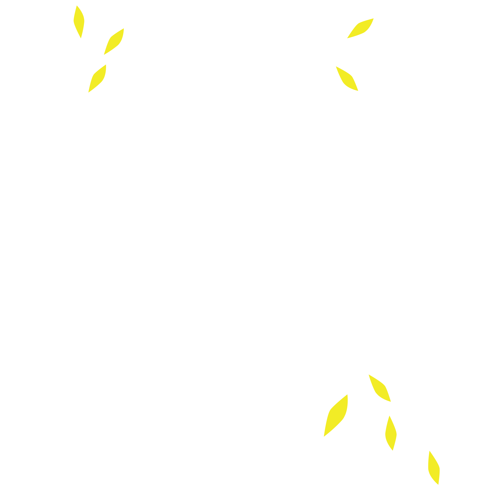
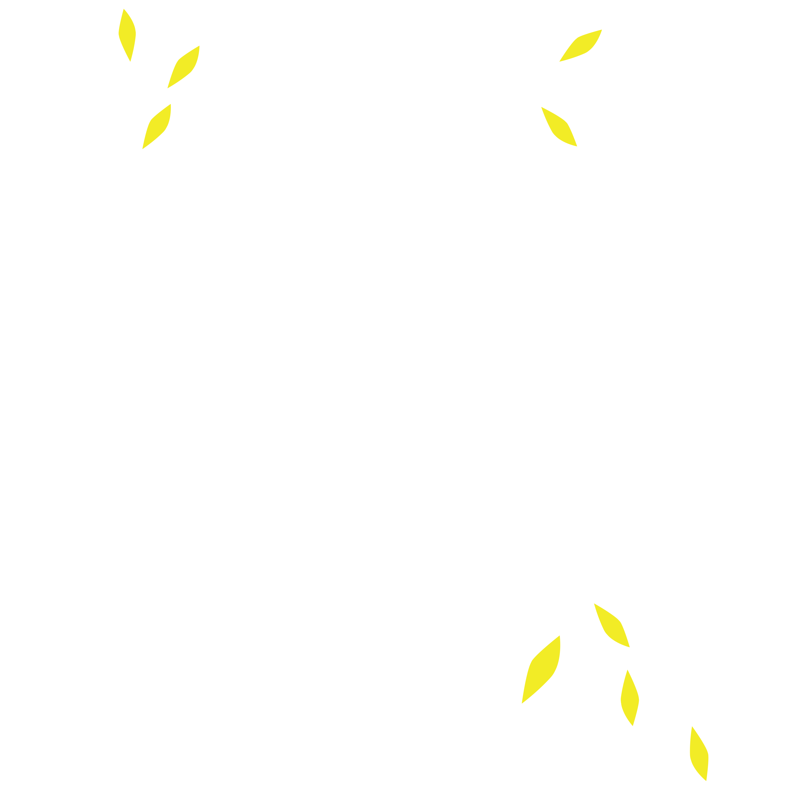

SORROWS
OF THE KING
Matisse’s Sorrows of the King is a collage using cut out paper shapes by Henri Matisse from 1952. It was made from paper he had coloured with gouache paint and is mounted on canvas. Its area is 292 x 386 cm. It was his final self-portrait. During the early-to-mid-1940s Matisse was in poor health. By 1950 he stopped painting in favor of his paper cutouts. The Sorrows of the King is an example of Matisse's final body of works known as the cutouts.
signed lithograph, edition of 200